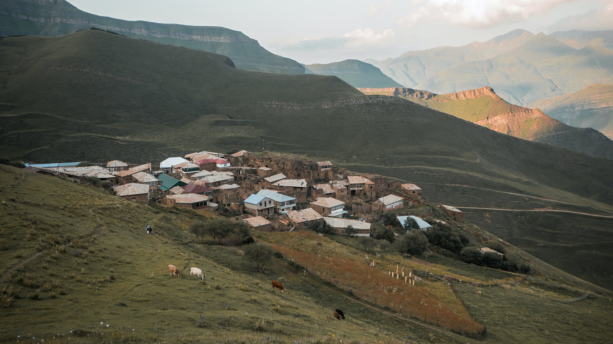
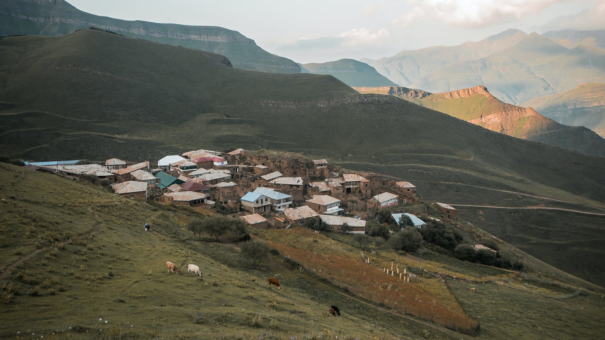

الاحتباس الحراري جريمة تخفيها شركات النفط
تؤثر المصانع بالسلب علي هوائنا مما ينتجب عنه زيادة هائلة في ال....المزيد

تؤثر المصانع بالسلب علي هوائنا مما ينتجب عنه زيادة هائلة في ال....المزيد
لنحافظ علي المحيط يجب علينا جميعا ان نقلل من اسنهلاك النفط ...المزيد
كما نعلم جميعا ان الكوكب يتغير يوما تلو الاخر وتزيد نسبة الحرائق و...المزيد
بدأ الناشطون أسبوع المناخ بالاحتجاج على الوقود الأحفوري في مدينة نيويورك تتصدر قضية الاحتباس الحراري المشهد العالمي مع تدشين آلاف المحتجين، الأحد، "أسبوع المناخ"، بعدما اكتظت بهم شوارع منطقة ميدتاون بحي مانهاتن في نيويورك، قبيل انعقاد الجمعية العامة للأمم المتحدة، الأسبوع الجاري. وحددت الأمم المتحدة الوقود الأحفوري، المتمثل في الفحم والنفط والغاز، كأكبر مساهم على الإطلاق في تغير المناخ العالمي، إذ يمثل أكثر من 75 في المئة من انبعاثات غازات الدفيئة العالمية، وما يقرب من 90 في المئة من جميع انبعاثات ثاني أكسيد الكربون. لكن لا هناك عوامل أخرى تسهم في أزمة التغير المناخي. ويأتي التوقف عن استخدام الوقود الأحفوري على رأس مطالب المحتجين من الرئيس الأميركي، جو بايدن، وزعماء العالم. ومن المقرر خلال أسبوع المناخ تنظيم ما يزيد على 500 احتجاج في 54 دولة حول العالم، مع توقع مشاركة ما يزيد على مليون شخص في أنحاء العالم. وتأتي الاحتجاجات قبل شهرين من مؤتمر الأمم المتحدة المعني بتغير المناخ (كوب28) الذي تعتزم فيه أكثر من 80 دولة الضغط من أجل التوصل إلى اتفاق عالمي للتخلص التدريجي من الفحم والنفط والغاز. الوقود الأحفوري حددت الأمم المتحدة محطات توليد الكهرباء والحرارة عن طريق حرق الوقود الأحفوري باعتبارها المتسبب الأكبر في جزء كبير من الانبعاثات العالمية. وبينما تغطي انبعاثات الغازات الدفيئة الأرض، فإنها تحبس حرارة الشمس، وهذا يؤدي إلى ظاهرة الاحتباس الحراري وتغير المناخ. وترتفع درجة حرارة العالم الآن بشكل أسرع من أي وقت مضى في التاريخ، ما يؤدي إلى تغيير أنماط الطقس والإخلال بتوازن للطبيعة. وهذا يشكل العديد من المخاطر على البشر وجميع أشكال الحياة الأخرى على الأرض.
معضلة حقيقية يعيشها العالم بين استخدام النفط والغاز الطبيعي، اللذين لا غنى عنهما للتنمية الاقتصادية في الدول النامية والمتقدمة؛ كونهما يشكلان أفضل مصدر اقتصادي موثوق وعملي للطاقة، إلا أنه من جهة أخرى فإن استخدامهما في مجال الطاقة يُسهم إلى حد كبير في زيادة انبعاثات غاز ثاني أكسيد الكربون في الغلاف الجوي، الذي يؤدي إلى التغير المناخي، والذي يُعد قضية حاسمة في عصرنا، اليوم، فالآثار العالمية للتغير المناخي واسعة النطاق، من تبدُّل أنماط الطقس التي تهدد الإنتاج الغذائي، إضافة إلى ارتفاع منسوب مياه البحار التي تزيد خطر الفيضانات الكارثية، ولا شك أن الأمر سيكون أكثر صعوبة وتكلفة في المستقبل إذا لم يتم اتخاذ إجراءات جذرية. وأعلن وزير الطاقة السعودي الأمير عبد العزيز بن سلمان، الاثنين 26 أكتوبر (تشرين الأول) الحالي، خلال مشاركته في قمة سنغافورة للطاقة، أن "على العالم أن يبحث كل الخيارات لتخفيف انبعاثات الغازات المسببة للاحتباس الحراري في حربه ضد تغير المناخ، لكن التخلص من النفط والغاز سيكون بعيد المنال، وغير واقعي. ينبغي أن تكون هناك دراسة لكل الخيارات، لتخفيف الانبعاثات لمكافحة تغير المناخ". وحذر وزير الطاقة السعودي من أن عدم الامتثال، والالتزام يمكن أن يقوض اتفاق "أوبك+"، مستدركاً "دعونا لا نركز على الوقود الذي نختاره، بل كيف يمكننا التخفيف والتكيف مع هذه الحقائق من دون إظهار أي تفضيلات". لا غنى عن النفط يرى الكاتب الاقتصادي وعضو مجلس الشورى السعودي (البرلمان) فهد بن جمعة، أن "العالم لن يستغني عن استخدام النفط والغاز والفحم، وخاصةً طاقة النفط التي لها استخدامات متعددة، منها النقل، والصناعات التحويلية، وغيرهما. وكما يُقال عن الفحم سابقاً ولاحقاً، ها هو يُقال عن النفط منذ فترة، وحتى الآن، إما لجهلٍ أو لأسبابٍ تنتقص من قوة الاقتصادات النفطية التي تنفق إيراداتها على التنمية الاقتصادية وتنويع اقتصاداتها". وأضاف ابن جمعة أن "استخدامات الطاقة النظيفة (الذرية) والمتجددة (الشمسية، والرياح، والكهرومائية...) لتوليد الكهرباء، واستخدامات أخرى، لا نستطيع أن نستنتج منها أن العالم سيستغني عن النفط، على أنه سلعة ناضبة بعد عقود من الزمن، أو بسبب نمو مساهمة الطاقة النظيفة والمتجددة المتواضعة، أو لأنه يؤثر سلباً على البيئة، وهذا لم يحدث للفحم الأكثر ضرراً على البيئة من النفط.
المناخ هو نظام الحالة الجوية المتوقعة في منطقة معينة على مدى فترة طويلة، ويشمل درجات الحرارة والرطوبة وسرعة الرياح ونسبة الهطول الجوي.

 


Made With By Beasts